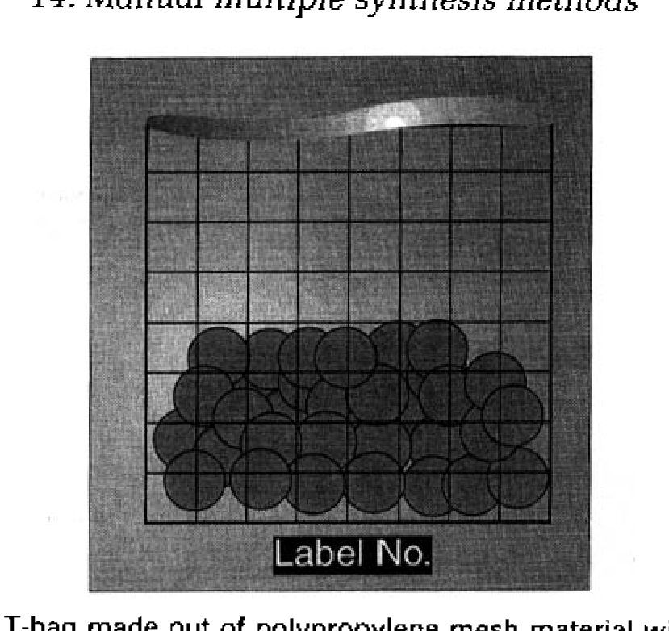
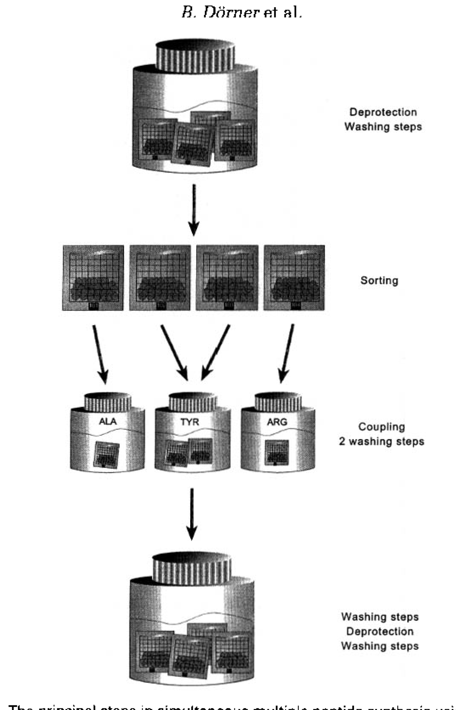
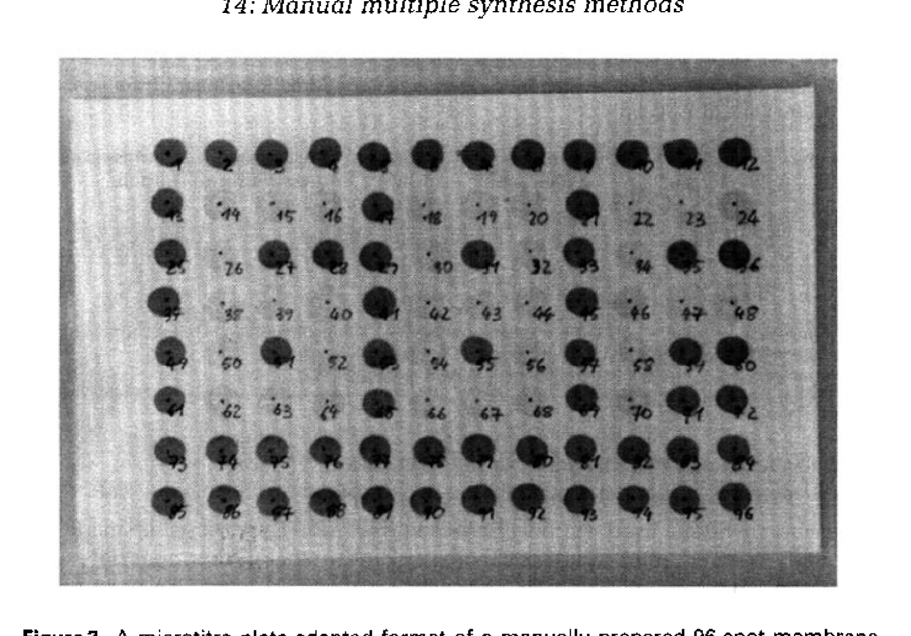
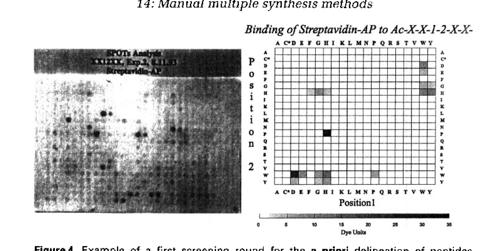
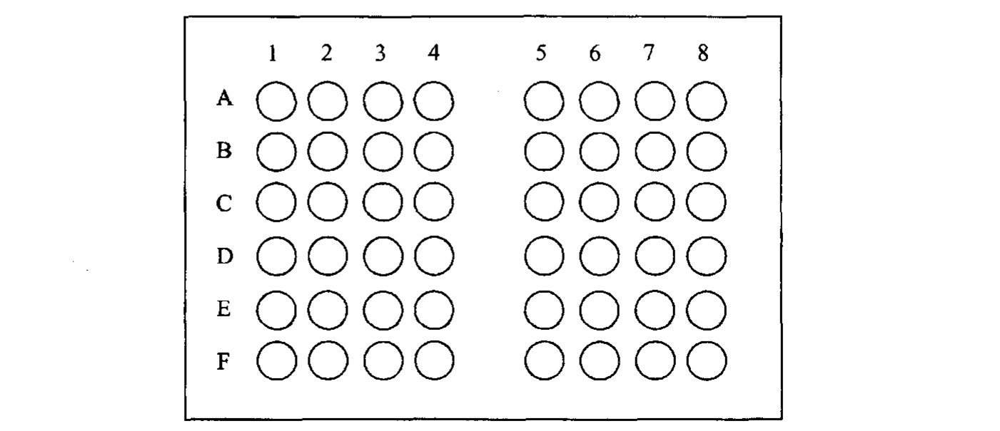
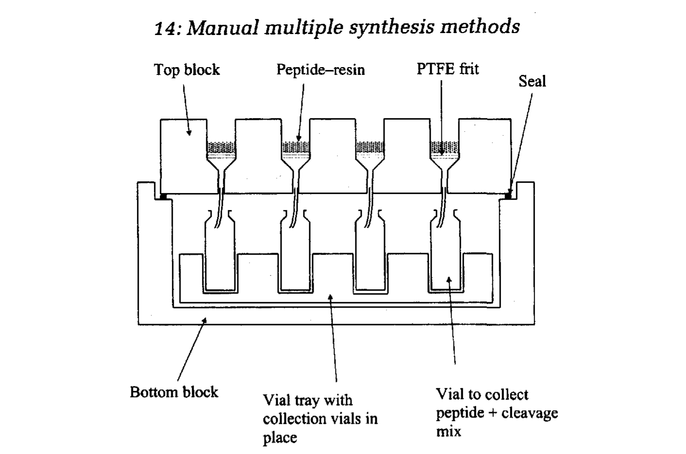
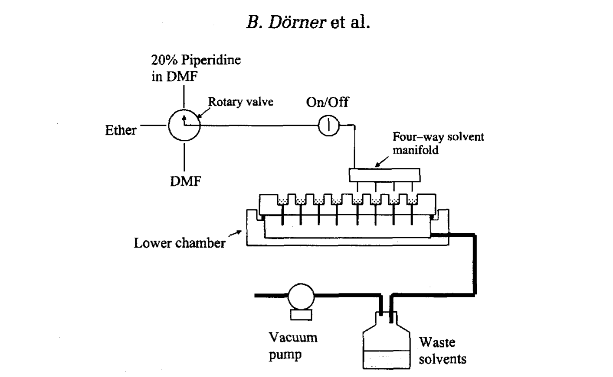
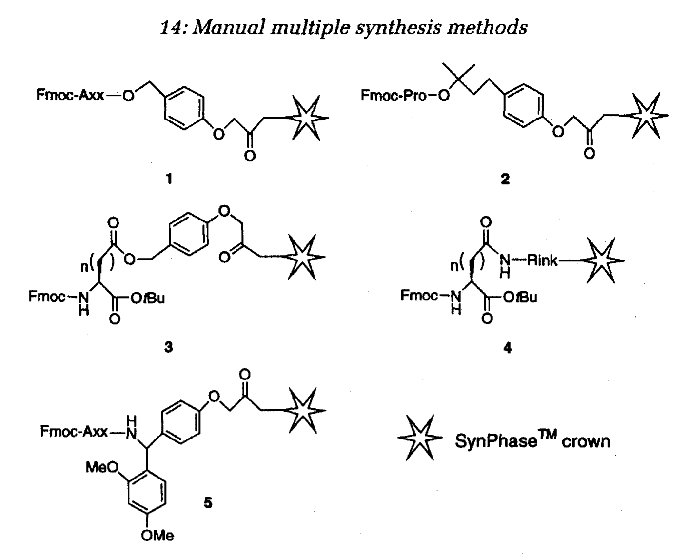

第十四章 手动多重合成方法
Manual Multiple Synthesis Methods
作者：B. Dorner, J. M. Ostresh, R. A. Houghten, R. A. Doerner 书页：303–328
————————————————————————————————————————
在现代肽化学研究中，经常需要同时制备大量不同序列的肽。典型应用场景包括：
抗原表位作图（epitope mapping）：需要合成覆盖整个蛋白序列的重叠肽段（overlapping peptides），数量通常为 50–500 条
组合肽库（combinatorial peptide libraries）：构建包含数千到数百万条肽的文库用于药物筛选
结构-活性关系（SAR）研究：系统突变肽序列中的各个残基，评估每个位置对活性的贡献
激酶底物谱（kinase substrate profiling）：合成肽阵列筛选激酶的底物特异性
虽然自动化多重合成仪（如 SYMPHONY、AMS 422，见第十三章）能够满足高通量需求，但其设备成本高昂（$80K–$200K+），并非所有实验室都能承担。手动多重合成方法（manual multiple synthesis methods）以极低的成本实现了多重合成的能力，是资源有限实验室的理想选择。
本章介绍了四种主要的手动多重合成方法：（1）T-bag 法，（2）SPOT 法，（3）模块阵列法，以及（4）Multipin/多针法。每种方法都有其独特的优势和适用范围。
T-bag（"茶袋"）法由 Houghten 于 1985 年发明，是最早的手动多重合成方法。其核心思想非常巧妙：将树脂分装到带编号的聚丙烯网格袋（polypropylene mesh bags）中，每个袋装有一条肽对应的树脂。

Figure 1. 标记编号的 T-bag，由聚丙烯网格材料制成，边缘热封，内装树脂
T-bag 法的操作原理基于一个关键观察：SPPS 中的大多数步骤——洗涤（washing）、脱保护（deprotection, Fmoc removal）、以及溶剂交换——对所有肽都是相同的。因此，所有 T-bag 可以集中在一起进行这些"公共步骤"（common steps），只有在偶联（coupling）步骤时才需要将各个 T-bag 分开，分别加入不同的氨基酸。
T-bag 法的主要步骤（参见 Figure 2）：

Figure 2. T-bag 技术同时多重肽合成的主要步骤流程图
Step 1 — 树脂准备与装袋：
称取适量树脂（通常 30–100 mg/袋，对应 0.02–0.05 mmol）
将树脂装入聚丙烯网格袋中
用热封机（heat sealer）密封袋的边缘，确保树脂不会漏出
用不褪色墨水（permanent ink）在袋上标记编号
记录编号与对应的肽序列
Step 2 — 公共步骤（批量处理所有 T-bag）：
将所有 T-bag 放入一个大烧杯或反应瓶中
加入 DMF 进行溶胀（swelling，30 min）
Fmoc 脱保护：20% piperidine/DMF，处理 15–20 min
DMF 洗涤 × 5，DCM 洗涤 × 3
茚三酮检测（Kaiser test）确认脱保护完全
Step 3 — 偶联步骤（逐袋处理）：
将 T-bag 按编号分开，放入各自标记的小瓶中
向每个瓶中加入对应的活化氨基酸溶液（preactivated amino acid solution）
反应 30–60 min（HBTU/HOBt/DIEA 活化）
偶联完成后，将所有 T-bag 重新集中，进行下一轮公共洗涤
Step 4 — 循环与裂解：
重复 Step 2–3，直到所有氨基酸偶联完成
最终脱保护后，将各 T-bag 分别放入裂解液中（TFA/TIS/water 或 TFA/thioanisole/EDT/anisole）
裂解 2–4 h，乙醚沉淀（ether precipitation）收集粗肽
【优点】设备成本低（只需热封机、烧杯、振荡器）；操作简单，适合 20–100 条肽的同时合成；支持中等长度肽链（up to 20–30 mer）
【缺点】偶联步骤仍然需要逐袋操作，劳动强度大；无法实现真正的"高通量"；袋的密封性需要仔细检查，防止树脂泄漏
适用场景：需要合成 20–100 条中等长度肽（10–25 mer）且预算有限的实验室。T-bag 法至今仍被广泛使用，特别是在制备抗原表位扫描肽库时。
SPOT 法由 Frank 于 1992 年发明，是一种在纤维素膜（cellulose membrane）上直接进行肽合成的方法。其核心原理是：将溶解在适当溶剂中的活化氨基酸溶液以微小液滴（spot，约 0.1–1 μL）点加到纤维素膜上，每个液滴形成一个独立的反应区域。纤维素膜本身就是固相载体，膜上的羟基（hydroxyl group）作为肽链生长的起始位点。

Figure 3. 微孔板适配格式的手动制备 96-spot 膜。深色斑点指示已合成的肽位置
SPOT 法的阵列密度可以根据需要调整。下表（Table 1）列出了标准配置：
Table 1. 标准 SPOT 阵列配置
| 阵列格式 | 斑点间距 | 每膜斑点数 | 每斑肽量 |
|---|---|---|---|
| 3 × 3 | 4 mm | ~60 | ~50 nmol |
| 4 × 4 | 3 mm | ~100 | ~20 nmol |
| 5 × 5 | 2 mm | ~200 | ~10 nmol |
| 自定义 | 1–6 mm | 50–1000+ | 5–100 nmol |
SPOT 法的最大优势是极高的通量——一张膜上可以同时合成数百到数千条不同的肽。典型应用包括：全位置扫描库（positional scanning libraries）、重叠肽扫描（overlapping peptide scanning）和 B 细胞/T 细胞表位作图。
Protocol 概要：
1. FMOC 纤维素膜准备：使用 Fmoc-β-alanine 进行膜功能化（functionalization），引入第一个连接臂（linker）
2. Fmoc 脱保护：将整张膜浸入 20% piperidine/DMF 中处理 20 min
3. DMF 洗涤 × 3，乙醇洗涤 × 1，干燥
4. 点样偶联（spotting）：用微量移液器将活化氨基酸溶液（Fmoc-AA/HBTU/HOBt/DIEA in NMP）点加到各斑点位置，每斑约 0.1–0.5 μL
5. 反应 20–30 min，让偶联完成
6. 重复步骤 2–5 直到所有肽链延伸完成
7. 侧链脱保护（side-chain deprotection）：TFA/TIS/water (95:2.5:2.5)，1–2 h
8. 膜可直接用于结合实验（binding assay），或切割单个斑点获取可溶性肽

Figure 4. 链霉亲和素-碱性磷酸酶（Streptavidin-AP）与 Ac-X-X-I-L-X-X-XXX 肽库结合的 SPOT 初筛结果示例
SPOT 法最独特的应用是膜上直接筛选（on-membrane screening）。合成完成后，肽仍然共价连接在膜上，可以直接与蛋白/抗体/细胞孵育，通过显色反应（colorimetric detection）或放射自显影（autoradiography）检测结合信号。这使得 SPOT 法成为抗原表位作图最经济高效的工具之一。
【优点】通量极高（一张膜数百到数千条肽）；成本极低（无需树脂、无需大量溶剂）；膜上直接筛选，省去了纯化步骤
【缺点】仅适合短肽（6–15 mer），长肽合成效率下降明显；每斑肽量少（5–100 nmol），不适合需要大量样品的实验；纤维素膜对某些有机溶剂耐受性有限
模块阵列法（也称 block synthesis 法）是一种介于 T-bag 和自动化合成仪之间的手动多重合成方法。它使用特殊的模块化反应系统（modular block system），基于标准的 96 孔板格式，实现 96 条肽的平行合成。
系统的核心组件包括：（1）顶板（top block），带有 96 个反应井（reaction wells），每个井可独立装入不同的树脂和氨基酸；（2）底板（bottom block），带有 96 个收集井用于收集流出液；（3）两板之间可插入密封垫或滤膜，控制液体的流过。

Figure 5. 顶板中反应井的布局
Figure 6 展示了模块系统的截面图，说明了肽切割（peptide cleavage）的过程。当需要裂解肽时，将裂解液（cleavage cocktail）加入反应井，肽从树脂上切割下来，通过滤板流入收集板。

Figure 6. 模块系统截面图，展示肽从固相载体上切割的过程
Figure 7 展示了完整的流体组装（fluidic assembly），包括溶剂瓶（solvent reservoirs）、多通道移液器（multichannel pipette）或液体处理器（liquid handler）接口、反应模块和废液收集系统。

Figure 7. 完整的合成操作流体系统
Table 2 详列了一个合成循环中的各操作步骤：
Table 2. 一个合成循环的操作步骤
| 步骤 | 操作 | 次数/时间 |
|---|---|---|
| 1 | DMF 洗涤（通过多通道移液器加入并抽滤） | 3 × 1 min |
| 2 | 20% piperidine/DMF（脱保护） | 1 × 5 min + 1 × 15 min |
| 3 | DMF 洗涤 | 5 × 1 min |
| 4 | DCM 洗涤 | 2 × 1 min |
| 5 | 加入活化氨基酸溶液（各孔不同） | 反应 45–60 min |
| 6 | DMF 洗涤 | 3 × 1 min |
| 7 | Kaiser test 或溴酚蓝检测确认偶联完成 | — |
【优点】96 孔格式与标准实验设备兼容（移液器、收集板等）；每孔可合成 10–50 mg 粗肽，满足多数筛选需求；多通道移液器大大减少了手动操作时间
【缺点】需要购买专门的模块系统（成本中等）；手动操作仍较费时（一个完整循环约需 1.5–2 h）；不适合太长的肽（推荐 < 20 mer）
Multipin（多针）法由 Geysen 于 1984 年发明，最初用于 B 细胞表位作图。其核心创新是使用聚乙烯针头（polyethylene pins）作为固相载体。96 根针排列在标准微孔板间距（9 mm）的支架上，每根针上合成一条不同的肽。
现代 Multipin 法使用 Chiron Technologies（现 Mimotopes）开发的 SynPhase™ 技术。每根针的尖端安装一个 SynPhase Crown（"皇冠"型连接臂），由辐射接枝的聚合物（radiation-grafted polymer）制成，提供高载量的功能基团。

Figure 8. SynPhase™ Crown 上使用的连接臂结构（n=1 为 Asp 类型，n=2 为 Glu 类型）
Figure 8 展示了 SynPhase Crown 上可用的连接臂类型。选择正确的连接臂决定了肽 C 端的功能基团：
Wang 型连接臂 → 产生游离酸（free acid, –COOH）
Rink amide 型连接臂 → 产生 C 端酰胺（C-terminal amide, –CONH₂）
HMBA 连接臂 → 可根据裂解条件产生酸或酰胺
其他特殊连接臂 → 支持侧链修饰、环化等
Protocol 概要：
1. 将 96 根 SynPhase Crown 针安装在支架上
2. 公共步骤：将整个支架浸入盛有洗涤液或脱保护液的大容器中
- DMF 洗涤 × 3
- 20% piperidine/DMF 脱保护（2 × 5 min）
- DMF 洗涤 × 5
3. 偶联步骤：将支架放入 96 孔板中，每孔含不同的活化氨基酸溶液
- 反应 45–60 min（HBTU/HOBt/NMM 活化）
4. 循环重复步骤 2–3 完成所有氨基酸的偶联
5. 最终侧链脱保护（TFA cocktail）
6. 肽切割与收集（根据需要）
Multipin 法最大的优势在于合成与检测的无缝衔接。由于肽共价连接在针上，可以直接进行以下检测：
ELISA 检测：将针与抗体/血清孵育，再用酶标二抗检测结合
SPOTS 法（Solid Phase Overlay）：蛋白质-肽相互作用筛选
细胞结合实验：将针与细胞悬液孵育
放射性配体结合（radioligand binding）
如果需要可溶性肽，可以通过切割连接臂将肽释放到 96 孔板中。每根针的肽产量约为 0.5–5 μmol，足够用于多数筛选实验。
HIV 表位扫描：使用 Multipin 合成了覆盖 HIV-1 gp120 蛋白的重叠肽库，鉴定了多个中和抗体表位
蛋白-蛋白相互作用界面映射：系统突变肽序列，确定关键残基
激酶底物优化：合成激酶底物肽库，鉴定最优底物序列
疫苗开发：筛选 T 细胞表位肽
| 方法 | 通量 | 肽长度 | 每条肽量 | 最佳应用 |
|---|---|---|---|---|
| T-bag 法 | 20–100 条/批 | 10–30 mer | 20–100 mg | 中等通量、中等长度肽 |
| SPOT 法 | 100–1000+ 条/膜 | 6–15 mer | 5–100 nmol | 极高通量短肽、膜上筛选 |
| 模块阵列法 | 96 条/批 | 5–20 mer | 10–50 mg | 平衡通量与规模 |
| Multipin 法 | 96 条/批 | 5–20 mer | 0.5–5 μmol | 与免疫检测无缝衔接 |
| 自动化多重合成 | 24–96+ 条/批 | 5–30 mer | 5–50 mg | 预算充足时首选 |
根据实验需求选择最合适的方法：
需要 < 50 条中等长度肽（15–25 mer）→ T-bag 法（最经济）
需要 > 200 条短肽（< 12 mer）用于初筛 → SPOT 法（最高通量）
需要 96 条肽，每条需要 10–50 mg → 模块阵列法
需要直接进行免疫检测 → Multipin 法（无需切割）
预算充足且需要自动化 → 参见第十三章的多重合成仪
偶联效率监控：定期使用 Kaiser test（茚三酮显色）或 bromophenol blue test 检测游离胺，确保偶联完全
双偶联（double coupling）：对于困难序列（如含 β-branched amino acids 如 Val、Ile 的位点），建议执行双偶联以提高产率
封端（capping）：未反应的氨基用 Ac₂O/DIEA 封端，防止 deletion sequence（缺失肽）的产生
严格记录：多重合成中最容易出错的是氨基酸分配错误，必须有严格的编号-序列对照记录
质量控制：随机抽取 10–20% 的肽进行 HPLC/MS 分析，确保整体合成质量
手动多重合成是资源有限实验室实现高通量肽合成的最佳策略，成本仅为自动化仪器的 1/100 到 1/10
T-bag 法（Houghten, 1985）：树脂分装入编号袋中，公共步骤批量处理，偶联步骤逐袋操作。适合 20–100 条 10–30 mer 肽
SPOT 法（Frank, 1992）：直接在纤维素膜上点样合成，每斑一条肽。通量最高（一张膜数百到数千条），适合 6–15 mer 短肽。膜上直接筛选是其独特优势
模块阵列法：96 孔板格式的模块化反应系统，平衡了通量和规模，每孔可产 10–50 mg 粗肽
Multipin 法（Geysen, 1984）：96 根 SynPhase Crown 针作为载体，最大优势是与 ELISA 等免疫检测无缝衔接
选择方法的核心逻辑：通量需求 × 肽长度 × 每条肽量 × 是否需要原位检测
所有手动方法的共同关键：严格的偶联效率监控（Kaiser test）、困难序列的双偶联策略、封端处理、以及严格的编号-序列对照